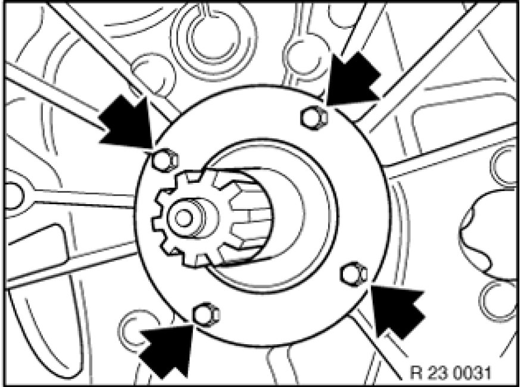
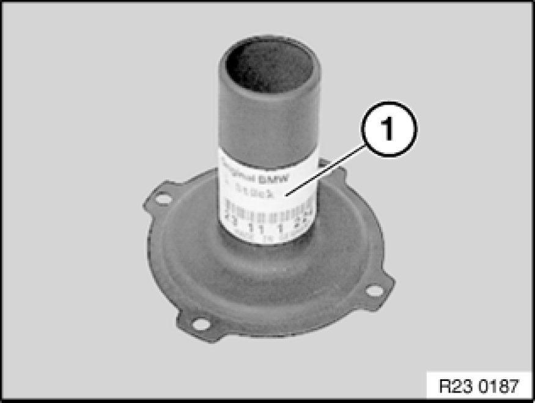

Replacing Guide Tube for Clutch Release Unit (GS6-37BZ/DZ)
23 11 614 - Replacing guide tube for clutch release unit (GS6-37BZ/DZ)
Note:
(transmission removed)

Necessary preliminary tasks:
- Remove clutch release bearing and release lever Service and Repair from guide tube.

Unfasten screws.
Remove guide tube (1).
Installation Note:
Clean thread.
Install screws with Loctite 243.
Tightening torque 23 11 2AZ [1][2]Case, M/T.

Note:
Remove sticker (1) and adhesive with a suitable solvent.